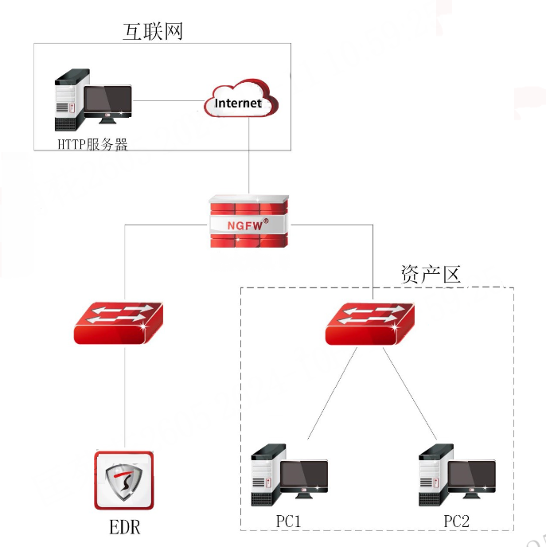
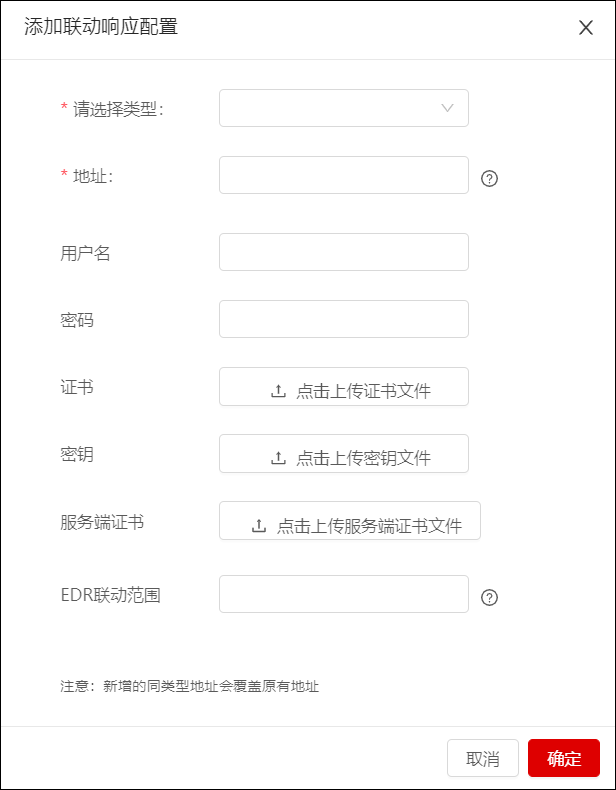

NGFW与EDR成功联动后，当EDR服务器检测到终端资产信息发生增、删、改时，都会向防火墙的4500端口发起连接，上报更新的资产信息（资产信息显示在 资产列表 界面）。终端资产信息的变化主要是指资产名称、IP地址、MAC地址、资产类型、物理地址、资产状态、安全状态等发生变化。另外，防火墙通过安全策略可实现对EDR终端进行安全管控，自动将不可信终端加入黑名单，未安装EDR客户端的流量不允许通过防火墙，请求EDR服务器下发EDR终端扫描任务等。
l案例需求
配置EDR服务器和防火墙联动，EDR服务器上报资产信息，再由防火墙针对资产进行安全防护，只有安装了EDR客户端软件的终端资产的流量允许通过防火墙，未安装EDR客户端软件的终端资产的流量经过防火墙时会被防火墙阻断。

l配置步骤
ü配置NGFW
| 步骤1 | 配置基础网络（接口地址和路由），确保NGFW与EDR服务器网络连通。 |
| 步骤2 | 开放NGFW与EDR服务器的联动服务，详见 联动服务配置。 |
| 步骤3 | 开启NGFW的联动服务使能开关，配置证书，详见 联动服务配置。 |
| 步骤4 | 配置EDR联动参数，开启EDR联动“接入EDR服务器”开关，获取资产，详见 EDR联动。（如果EDR联动界面没有开启“接入EDR服务器”开关，也可在资产发现界面开启“接入EDR服务器”开关，详见 资产发现。） |
|
²阻断未安装EDR客户端的终端或者EDR客户端不在线的终端通过防火墙访问资源，通过配置EDR管控策略“监控范围”实现。 |

ü配置EDR服务器
配置详见《TopEDR一本通》的“防火墙联动”配置示例。
| 步骤1 | 配置基础网络（接口地址和路由），确保EDR服务器与NGFW网络连通。 |
| 步骤2 | 配置联动信息。联动设备地址配置为：https://x.x.x.x:4500/configd（x.x.x.x是防火墙接口IP地址），用户名/密码需与NGFW的联动服务配置界面中配置的基础认证“用户名/密码”保持一致，导入证书和私钥。 |

ü联动结果验证
登录NGFW查看获取的资产。
在 菜单中可查看EDR服务器上报的资产（“资产来源”列显示为“EDR”），详见 资产列表。